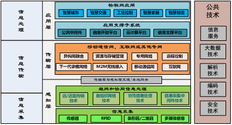
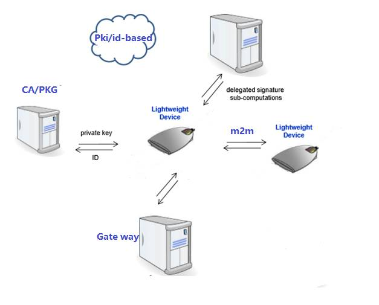

CSLG IT laboratory
平衡的智慧：当密码技术遇上物联网
物联网是信息技术发展到一定阶段的产物，它将各种有线和无线网络与互联网融合，综合应用海量的传感器、智能处理终端、全球定位系统等， 实现物与物、物与云、物与人的随时随地连接，进而实现虚拟世界对现实世界的智能管理和控制。如果飞速发展的物联网遭遇恶意攻击，所造成的后果往往会超出人们的预想。密码技术作为网络空间安全的核心与基础，如何应对其在物联网中应用时的种种新挑战？《易经》有云“一阴一阳谓之道”，矛盾的两面互为消长、相互依存地发展进步是中华民族的古老智慧，如今当严谨的密码技术遇上物联网，我们也能够从其中得到一些启示。
面临的新挑战
物联网系统架构通常可以分为感知层、传输层和应用层，三层架构如下图所示：

感知层：利用RFID、传感器等设备随时随地获取物体的各类信息；
网络层：通过各种电信网络与互联网的融合，将物体的信息实时准确地传递出去；
应用层：把感知层得到的信息进行处理，实现智能化识别、定位、跟踪、监控和管理等实际应用。对于物联网传输层和处理层，有许多相关安全保护技术，
涵盖其物理层、IP 层、传输层和云安全等各个方面，因此物联网传输层、处理层的安全技术不是本文所将阐述的重点。而在物联网三层架构中，感知层的特殊性使
其所面临的安全隐患和问题极为突出，存在终端设备固件安全、终端设备与云端认证、通信加密等安全保护需求。感知层节点数量往往巨大，且节点资源(包括存储容量、计算能力、通信带宽和传输距离等)
通常会受到比传统网络更加严格的限制。资源的严重受限使得对计算、存储和通信开销较大的传统认证及加密技术无法得以有效应用，因此轻量级(lightweight)密码技术成为该领域的研究热点。
面临的新挑战
.png)
轻量级密码技术的研究是要在安全性、成本、效率三者间进行权衡，当前轻量级密码技术的研究一般关注以下几点：
轻量级密码算法设计：包括流密码和分组密码，设计目标是在实现成本上轻量化，使用对象是 RFID 标签和资源非常有限的传感器节点；
可软硬件并行化的轻量级密码算法设计：设计目标是考虑不同场景的应用，或通信两端的性能折衷，虽然在轻量化实现方面也许不是最优，但当不考虑软硬件成本时，可使用并行处理技术实现吞吐率的大幅度提升；
轻量级公钥密码算法设计：在许多应用中，由于方便密钥分发等原因, 公钥密码具有不可替代的优势。
目前业界已提出了多种轻量级分组密码算法，比较知名的轻量级密码算法有分组密码算法LBlock、PRESENT、CLEFIA、SM7，流密码算法Enocoro、Trivium，杂凑密码算法PHOTON、SPONGENT，公钥密码算法cryptoGPS等。
梆梆安全的努力与实践
物联网终端剩余空间、对通信性能降低情况、对用户体验影响最小、海量终端中使用带来的成本增加问题……在这些物联网客观特征存在的前提下，提供最高级别的安全支持一直是梆梆安全追求的目标。而在当前纷杂的产业现状中，这更是一个难度相当大的工程实践问题。 梆梆安全针对物联网各层，针对物联网用户真实情况，做了大量技术储配及工程方案。
密码算法及协议方面，针对物联网感知层、传输层、处理层的特点，给出具备行业先进性及符合监管要求的密码支撑解决方案及产品；
使用并行运算等技术对运算进行加速，而使用并行运算通常对空间又是一个挑战，梆梆安全通过技术研究积累，在数倍降低耗费时间的同时将所需空间增加量控制在几百字节；
针对业务系统实际情况，在不降低安全度前提下将密码支撑系统整体的计算量进行重新分配，对终端安全模块所需空间、终端计算量、端到端认证和加密所需的通信轮数、通信数据量等方面进行大幅优化；
密钥保护措施方面，根据业务重要层级、物联网系统受攻击时运营方和大众的利益损害、攻击者获利、海量设备使用性价比平衡等因素，提供白盒、物理不可复制（Physically Unclonable Function,PUF）、基于硬件SE等不同级别的密钥安全防护。 密码支撑系统需要努力做到最小化影响业务系统运行，使得运营者可以为用户提供更好的智能设备使用体验。同时物联网系统在研发之始就应考虑安全支撑问题，行业各方共同努力才能营造出一个智慧而安全的未来生活。
cslgit©2016 Bootstrap 响应式网络安全服务 | 版权所有️